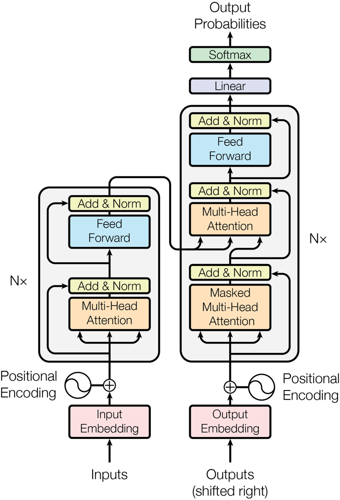

編碼器把文字讀進層層的向量，解碼器再把向量寫回一行文字。讀與寫連起來，就是一個詮釋的循環。An encoder reads a text into layers of vectors, and a decoder writes the vectors back into a line of text; joined together, reading and writing form a hermeneutic circle.
CHI3242 文本挖掘 Text Mining for Chinese Humanities · ←→ navigate · 1–8 sections · G go to slide · L laser pointer · F fullscreen
讀與寫：變換器的兩半Reading and writing: the two halves of the Transformer
編碼器 · BERTencoder · 第 11 週
讀：把一段文字整合成層層的向量。
解碼器 · GPTdecoder · 第 12 週
寫：把向量線性化，一次寫一個詞元。
今天我們把這兩半接成一個圈。Today we join the two halves into a circle.

Vaswani et al., “Attention Is All You Need” (2017), Fig. 1
詮釋循環：部分與整體The hermeneutic circle: the parts and the whole
Friedrich Schleiermacher1768–1834
“Complete knowledge is always in this apparent circle, that each particular can only be understood via the general, of which it is part, and vice versa.”
Friedrich Schleiermacher, Hermeneutics and Criticism and Other Writings, trans. Andrew Bowie (Cambridge, 1998)
讀一個字，要靠整句；讀一句，要靠整篇；而整篇的意思，又只能從一個一個字裡讀出來。A character needs the sentence, a sentence needs the whole text, and the whole is read out of single characters.
錢鍾書論「闡釋之循環」Qian Zhongshu on the hermeneutic circle
“Accumulate the small to illuminate the large, and take up the large to thread through the small […] going back and forth, until the interpretation is complete: this is the so-called hermeneutic circle.”
錢鍾書，《管錐編》第一冊（北京：中華書局，1979）
重新想像詮釋循環The hermeneutic circle, reimagined with an encoder and a decoder
① 編碼器把一段敘事整合成層層的向量：越往下，看得越廣、變得越慢。An encoder integrates a narrative into layers of vectors.
② 解碼器把這些向量線性化，寫成一行新的文字：一篇詮釋、一段評論。A decoder linearizes the vectors into a new sequence: an interpretation.
③ 這篇詮釋又被別的讀者讀進去，再寫成新的敘事。循環沒有終點。The interpretation is read again and written into new narratives.
④ 回饋：上層把預期送回下層，已經理解的東西，改變了接下來怎樣讀。Feedback: higher layers send expectations back to lower ones.
⑤ 大部分理解是沒有說出口的激活模式（潛文性），只有一小部分被寫成符號序列（互文性）。Most understanding stays in patterns of activation (infratextuality); a small part becomes symbolic sequences (intertextuality).
Adapted from Kurzynski, “Poly-Temporal, Multi-Layered,” IJHAC 19.1 (2025), Fig. 3.
同一個「妻子」，兩個世界：莫言的老婆，張愛玲的太太。期末專題比較兩位作家、兩個時代，或兩個人物的對話，都可以這樣做。Same wife, two worlds; the same method works for two authors, two periods or two characters’ dialogue.
人物空間：用搭配詞操作化第 4 週Character-space, operationalized with collocates
\(\Delta(A,B) < \Delta(A,C)\)：B 的風格更接近 A。真實的研究用的是 100 到 500 個最常見的詞，算法完全一樣。（數字為示意。）Delta(A,B) is smaller, so B is stylistically closer to A; real studies use 100–500 most frequent words. Illustrative numbers.
文體計量學：《紅樓夢》的作者第 8 週Stylometry: who wrote the Dream of the Red Chamber?
有了表格，就能提問：誰說得多？Once it is a table, we can ask questions: who speaks more?
count_speakers.py
import csv
from collections import Counter
with open("dialogue.csv", encoding="utf-8") as f:
rows = list(csv.DictReader(f))
print(Counter(r["speaker"] for r in rows))
for r in rows:
if r["mention"] == "她":
print(r["text"])
import json
with open("jiazhen.json", encoding="utf-8") as f:
person = json.load(f)
print(person["name"], person["aliases"])
print("丈夫:", person["family"]["husband"])
for u in person["utterances"]:
print(u["mention"], u["text"])
print(person["birth_year"])
一個數據集也是一個版本。A dataset is also an edition: ask who compiled it, from which source, and what was added later.
實例二：什麼是 API 呼叫？Example 2: what is an API call?
你的程式extract_dialogue.py，在你的電腦上
請求 request →← 回答 response
OpenRouter把請求轉給各種模型的服務
→←
模型qwen/qwen3.5-9b，在別人的電腦上運行
地址
請求送到哪裡：…/chat/completions
金鑰
誰在問：你在 keyreg.qhchina.org 領的 API 金鑰
內容
問什麼：模型、訊息、結構，全部寫成 JSON
API（應用程式介面）是一個程式向另一個程式提出請求的固定方式。OpenCode、HistFig 背後，都是這樣的呼叫。An API is a fixed way for one program to ask another for something; OpenCode and HistFig make such calls all the time.
一次呼叫裡有什麼？指示、例子、新段落What goes into one call: instructions, an example, the new passage
路遙《平凡的世界》：每一列是一條邊，記兩人同段出現的次數（全書 9,729 段）。少平最常和曉霞同段；少安的連結分給了初戀潤葉和妻子秀蓮。Lu Yao, Ordinary World: edges count shared paragraphs; Shaoan’s ties are split between Runye and his wife Xiulian.
其實你們已經做過結構化數據You have been making structured data all term
期末專題也一樣：把中間結果存成 CSV 或 JSON，放進倉庫。讀者就能打開檔案，檢查每一個數字從哪裡來。Save intermediate results as CSV or JSON in your repository, so that readers can check every number.
總結Summary
1
編碼器讀，解碼器寫：連起來就是詮釋的循環。
2
數詞語 → 建模型 → 學向量。
3
CSV／TSV 存表格，JSON 存一層套一層的記錄。
4
每一個值，都要回到文本查核。
期末專題 12月7日（一）上午 9:00 截止：一個完整、可以運行的 GitHub 倉庫，加上一份報告。Final project due Monday 7 December, 9:00 am: a working GitHub repository and a report.